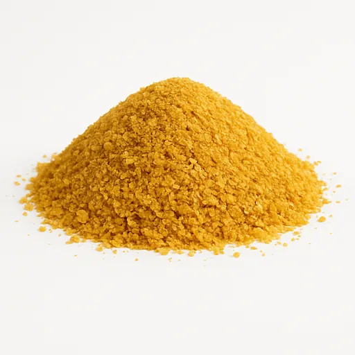
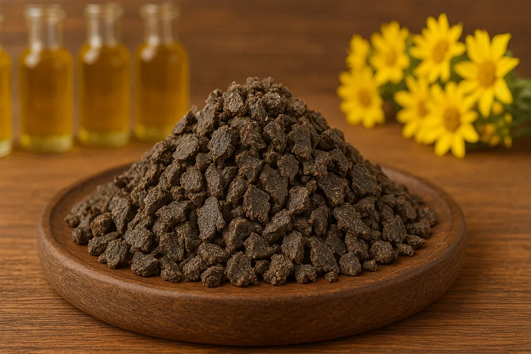
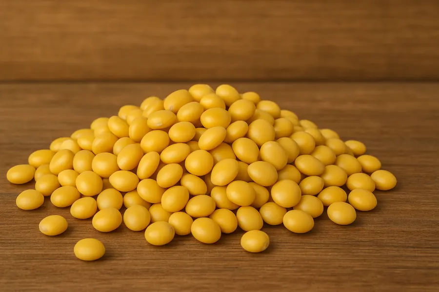
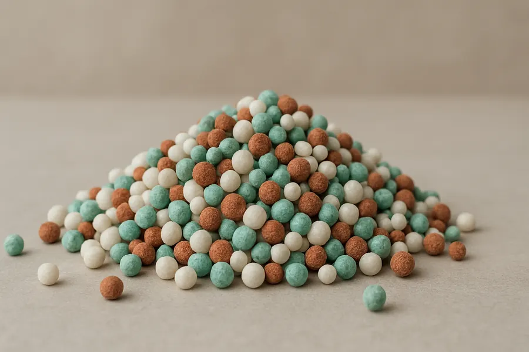

От 20 тонн
Работаем с оптовыми партиями. Минимальный объем поставки уточняется по конкретной позиции.
Оптовые поставки для сельского хозяйства и производств
Кормовые дрожжи, барда, жмых, люпин, минеральные удобрения и добавки для сельхозпредприятий, производств и оптовых заказчиков.
Подберем позицию под задачу, согласуем объем и условия отгрузки. Работаем с проверенными поставщиками и производителями продукции.

Работаем с оптовыми партиями. Минимальный объем поставки уточняется по конкретной позиции.
Подбираем кормовые ингредиенты, добавки и удобрения под потребности заказчика.
Готовы работать на постоянной основе с учетом плановых потребностей.
Связь по телефону и email для уточнения наличия, цены и условий отгрузки.
Каталог
Поставляем востребованные кормовые ингредиенты, минеральные удобрения и кормовые добавки. Наличие, характеристики и условия отгрузки уточняются под конкретный запрос.
Белковый компонент для повышения питательности рационов и комбикормов. Используется в животноводстве для поддержки пищеварения и обмена веществ.

Побочный продукт спиртового производства, источник протеина, клетчатки и микроэлементов для кормовых рационов.

Продукт переработки семян рапса. Используется как белковый кормовой компонент в сельском хозяйстве и животноводстве.

Кормовой продукт после отжима масла из семян подсолнечника. Может использоваться в рационах сельскохозяйственных животных.

Кормовая культура семейства бобовых с высоким содержанием белка. Применяется в животноводстве и производстве кормов.

Неорганические вещества для восполнения макро- и микроэлементов в почве и поддержки роста сельскохозяйственных культур.

Компоненты для рациона животных, которые помогают восполнять недостаток витаминов, минералов и поддерживать усвояемость кормов.
Условия
Работаем с оптовыми заказами и регулярными поставками. Минимальная партия - от 20 тонн. Конкретные условия зависят от позиции, объема, региона и формата отгрузки.
Рассчитать поставкуПроцесс
Вы сообщаете нужную позицию, объем, регион и желаемые сроки.
Мы проверяем наличие, параметры продукции, цену и возможный формат отгрузки.
Фиксируем объем, сроки, документы и порядок поставки.
Организуем поставку согласованной партии на утвержденных условиях.
Преимущества
Работаем с проверенными поставщиками и производителями продукции.
Учитываем потребности заказчика, объем партии и назначение продукции.
Сайт ориентирован на B2B-запросы и поставки от 20 тонн.
Готовы обсуждать регулярные поставки с учетом плановых потребностей клиента.
Дополнительное направление
Отдельно подбираем пильные ленты и диски для реза древесины, пластика и металла. Это направление вынесено отдельно, чтобы не смешивать его с кормовыми ингредиентами и удобрениями.

Контакты
Позвоните или напишите, чтобы уточнить наличие, цену, объем партии и условия отгрузки. Для быстрого ответа укажите нужную позицию, объем и регион поставки.